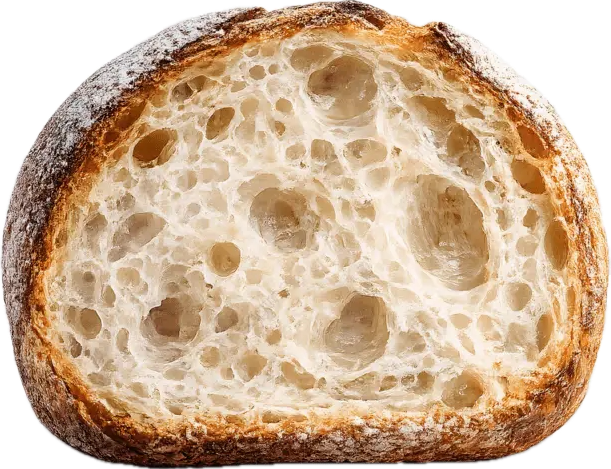
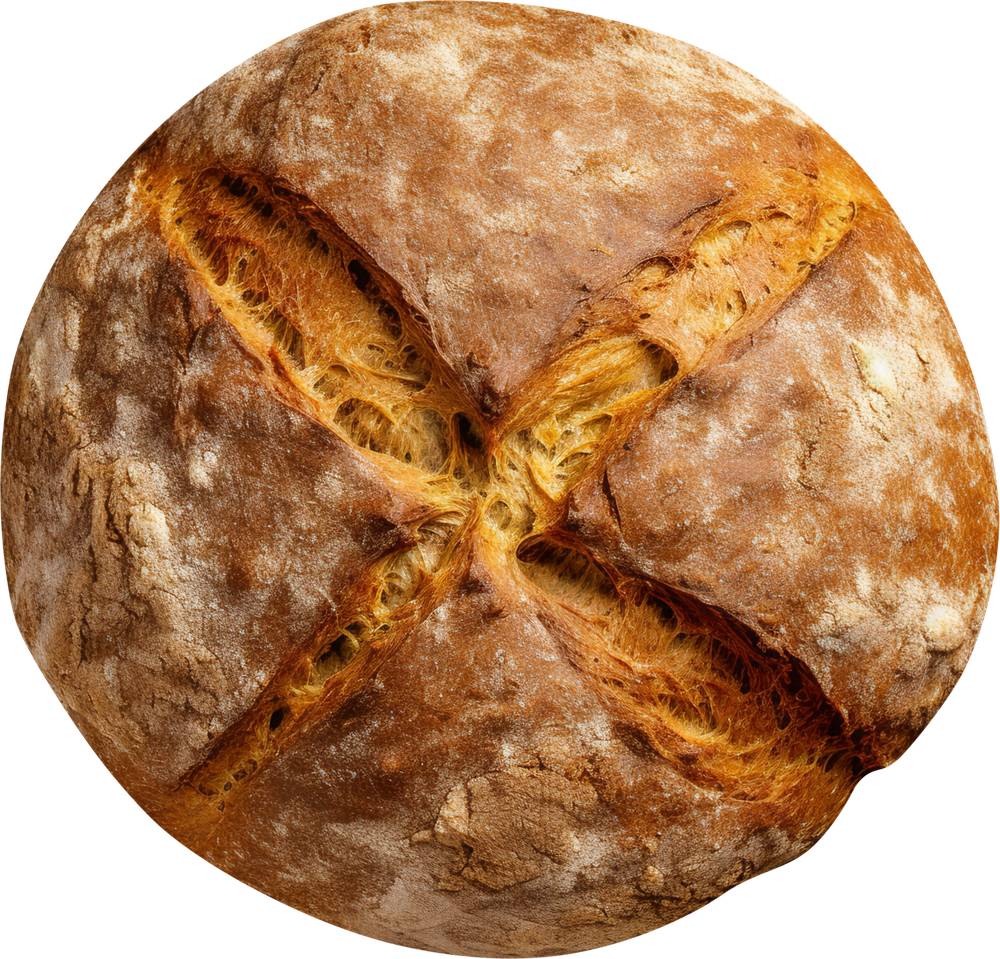

НАША ПРОДУКЦИЯ
Наш хлеб — это результат соединения традиций хлебопечения и
современных биотехнологий. Мы отказались от пекарских дрожжей
и вместо них используем пробиотические бактерии Lactobacillus
plantarum и Bifidobacterium bifidum.
Эти культуры запускают естественный процесс биоферментации,
благодаря которому тесто созревает медленно — в течение 12-16
часов. Именно это время необходимо для накопления органических
кислот, синтеза витаминов и частичного расщепления белков и
фитатов.


Почему это работает?
Пробиотические бактерии Lactobacillus plantarum и Bifidobacterium
bifidum в процессе ферментации:
- накапливают молочную и уксусную кислоты, обеспечивая естественный
консервирующий эффект; - синтезируют витамины группы В;
- расщепляют фитаты, повышая биодоступность минералов;
- частично расщепляют белки до пептидов и аминокислот;
- подавляют рост патогенной микрофлоры.
После выпечки в мякише сохраняется достаточное количество
жизнеспособных клеток (не менее 106 КОЕ/г на конец срока годности),
чтобы продукт мог считаться функциональным продуктом с
пробиотическими свойствами.